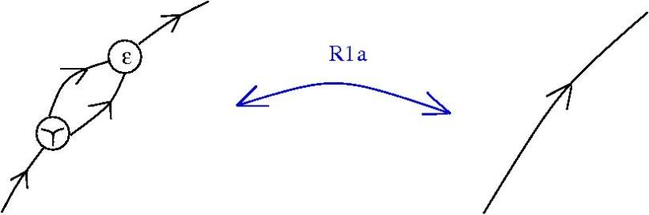

A kaleidoscope of graph rewrite systems in topology, metric geometry and computer science
or how to be mistaken with a programmer:
- • prove that a problem in geometry has a graph rewrite system description
- • hit a limit in the ability to reason with handwritten graphs
- • study graph rewrite systems in order to understand computation
- • propose a computation model which interest a lot of real world programmers
- • write programs to show your model works despite what those programmers think
- • find some unexplored directions in the study of computation and its applications
- • eventually solve your initial problem
From sub-riemannian geometry to emergent algebras
A riemannian manifold (X,g) is a length metric space (X,d) by Hopf-Rinow thm.
Problem 1: recover (X,g) from (X,d).
- • (1935, A. Wald) problem 1 for 2-dim manifolds.
- • (1948, A.D. Alexandrov) a metric notion of (sectional) curvature + smoothness solves 2-dim manifolds.
- • (1982, A.D. Alexandrov) conjecture that the same is true for n-dim manifolds.
- • (1998, I.G. Nikolaev) proves (Alexandrov conjecture) for n-dim manifolds.
From sub-riemannian geometry to emergent algebras
but (1996, M. Gromov) asks for a solution of
Problem 2: recover sub-riemannian (X,D,g) from (X,d).
- • (X,D,g) sub-riemannian if D completely non-integrable distribution and g a metric on D.
- • by Hopf-Rinow (X,D,g) is a length metric space (X,d), with d the CC distance.
From sub-riemannian geometry to emergent algebras
Sub-riemannian spaces are weird! (except when riemannian)
- • metric (Hausdorff) dimension > topological dimension
- • not Alexandrov spaces
- • tangent spaces are nilpotent (Carnot) groups, not vector spaces
- • Carnot groups have a peculiar differential calculus (Pansu derivative)
From sub-riemannian geometry to emergent algebras
Sub-riemannian spaces (techniques) are useful!
- • (1981, M. Gromov) finitely generated groups of polynomial growth same as those groups which have nilpotent subgroups of finite index
- • (1989, P. Pansu) proves Rademacher thm for Carnot groups, which implies a short proof for Margulis-Mostow rigidity
- • (2006, J.R. Lee, A. Naor) counter-example to Goemans-Linial conjecture by using the Heisenberg group as a SR space
- • (2010, E. Hrushovski) (2011, E. Breuillard, B. Green, T. Tao) Approximate groups are essentially Carnot groups
Emergent algebras
(2011, B.) solution of problem 2 which uses emergent algebras and graph rewrites.
- - a topological uniform space X, endowed with
- - a Γ-indexed family of idempotent right quasigroup operations
- - for which certain derived operations converge as the index "converges to 0"
Emergent algebras
Γ-indexed family of irq operations: ∀ A ∈ Γ ∘ = ∘(A), • = •(A)
- (Reidemeister 1) x ∘ x = x = x • x ∀ x ∈ X
- (Reidemeister 2) e • (e ∘ x) = x = e ∘ (e • x) ∀ e, x ∈ X
Emergent algebras
Γ-indexed family of irq operations: ∀ A ∈ Γ ∘ = ∘(A), • = •(A)
- (act) (Γ, ⋅, 1) is commutative group, acts:
Emergent algebras
- (em) (Γ, ⋅, 1) is continuous, with an absolute 0.
As a ∈ Γ → 0 - x ∘(a) y → x ∘(0) y = x , unif wrt x, y in compact sets
- Δ(a)(e,x,y) → Δ(0)(e,x,y) , unif wrt x, y in compact sets
Emergent algebras
Thm: Fix e ∈ X and denote x * y = Σ(0)(e,x,y). Then (X,*,e) is a conical group: continuous,
- (contractive) as a ∈ Γ → 0, a ⋅ x → e, uniformly wrt x in compact set
- (Γ, ⋅, 1) scalar multiplication: a ⋅ (x * y) = (a ⋅ x) * (a ⋅ y)
Emergent algebras
Thm: Fix e ∈ X and denote x * y = Σ(0)(e,x,y). Then (X,*,e) is a conical group: continuous,
- (contractive) as a ∈ Γ → 0, a ⋅ x → e, uniformly wrt x in compact set
- (Γ, ⋅, 1) scalar multiplication: a ⋅ (x * y) = (a ⋅ x) * (a ⋅ y)
Emergent algebras
Thm: Fix e ∈ X and denote x * y = Σ(0)(e,x,y). Then (X,*,e) is a conical group: continuous,
- (contractive) as a ∈ Γ → 0, a ⋅ x → e, uniformly wrt x in compact set
- (Γ, ⋅, 1) scalar multiplication: a ⋅ (x * y) = (a ⋅ x) * (a ⋅ y)
Emergent algebras
Thm: Fix e ∈ X and denote x * y = Σ(0)(e,x,y). Then (X,*,e) is a conical group: continuous,
- (contractive) as a ∈ Γ → 0, a ⋅ x → e, uniformly wrt x in compact set
- (Γ, ⋅, 1) scalar multiplication: a ⋅ (x * y) = (a ⋅ x) * (a ⋅ y)
Emergent algebras
Thm: Fix e ∈ X and denote x * y = Σ(0)(e,x,y). Then (X,*,e) is a conical group: continuous,
- (contractive) as a ∈ Γ → 0, a ⋅ x → e, uniformly wrt x in compact set
- (Γ, ⋅, 1) scalar multiplication: a ⋅ (x * y) = (a ⋅ x) * (a ⋅ y)

Where does this calculus come from?
Examples:
- • (normed) finite dim vector space X, * = +, Γ = (0, ∞)
- • Heisenberg groups:
- - take (H, <,>) complex Hilbert space, X = H × R
- (x,u) * (y,v) = (x + y, u + v + (1/2) Im <x,y>)
- - distribution D from left translate of H in X, is completely nonintegrable
- - metric on D from Re <,>
- - Γ = C ∖ {0}
- a ⋅ (x,u) = (a x , ∣a∣² u )
- • or just any Carnot group
Where does this calculus come from?
The operation * is commutative iff any of the following:
- - we can do the shuffle trick:
-

- - rays are semigroups, uniformly
- ∀ a, b ∈ Γ, ∃ a+b ∈ Γ, (a ⋅ x) * (b ⋅ x) = (a+b) ⋅ x
- - barycentric condition: ∀ a ∈ Γ, ∃ 1-a ∈ Γ
Hypothesis: space is a graph rewrite automaton
i.e. an asynchronous graph-rewrite automaton (S,R,A):
- - S is the class of graphs as before
- - R is the class of rewrites of emergent algebras
- - A is the simplest algorithm of rewrite: random
There are no points, there is no passive space, everything is shared computation on this substrate.
Problem: what can this automaton do? Can it compute?
Btw, what is computation?
Do knots compute?
Oriented knot diagrams are a class of graphs, with the Reidemeister rewrites.
Do knots compute?
Oriented knot diagrams are a class of graphs, with the Reidemeister rewrites.
Do knots compute?
Oriented knot diagrams are a class of graphs, with the Reidemeister rewrites.
Do knots compute?
A minimal, sufficient collection of Reidemeister rewrites:
(R1a)
(R1b)
(R2a)
(R3a)
Do knots compute?
Computation: (1936) Church and Turing
(1936, A. Church) Pure λ calculus is a term rewrite system
Terms:
- variable: x, y, z, ...
- term:
- - variable
- - A B where A, B terms (application)
- - λx.A where x var, A term (abstraction)
Term rewrite rule:
- β-reduction: (λx.D)B → D[x=B]
What algorithm?
(1936, A. Church) Pure λ calculus is a term rewrite system
Term rewrite rule:
- β-reduction: (λx.D)B → D[x=B]
(1971, C.P. Wadsworth, 1990, J. Lamping) graph rewrite system
- - an object A is a type
- - a subobject is a proposition (predicate)
- - an arrow A → B is a term of type B containing a free variable of type A
- - operations come from universal constructions
- - typed λ calculus - cartesian closed category (internal hom, products), like Set
- - linear logic - closed symmetric monoidal category, (internal hom, tensor product) like Vect
- - quantum logic - dagger category (internal hom, tensor product, adjoint) like Hilb
- - none of the above - (no internal hom, product?, no adjoint) Conical
Untyped lambda calculus + emergent algebras
- - S: oriented fatgraphs with 3-valent L,A,FI,FO, 1-valent T
- - R: graphical β rewrite
- - R: Reidemeister rewrites

- - CO-COMM, CO-ASSOC for the FO nodes
Chemlambda v1
- - S: oriented fatgraphs with 3-valent L,A,FI,FO, 1-valent T
- - R: graphical β rewrite and FAN-IN
- - R: DIST rewrites
- - R: CO-COMM, CO-ASSOC rewrites
Chemlambda v1 and GLC
Chemlambda v1 is a version of oriented Interaction Combinators (1990, 1997 Y. Lafont), with conflicting rewrites (so nondeterministic) and a fixed algorithm of reduction (random), i.e. an artificial chemistry.
Chemlambda v1 was initially "The chemical concrete machine", as (1992, G. Berry, G. Boudol) The chemical abstract machine.
Chemlambda v1 uses λ calculus as chemistry, related to Algorithmic Chemistry (2004, W. Fontana, L.W. Buss)
GLC and Chemlambda v1 are Turing universal as regards the rewrites.
Huge interest for decentralized computing!
Chemlambda v1 and GLC
Louis Kauffmann is the first programmer in chemlambda.
M.B., L.H. Kauffman, Chemlambda, universality and self-multiplication (slides)
Chemlambda v1 and GLC
Louis Kauffmann is the first programmer in chemlambda.
M.B., L.H. Kauffman, Chemlambda, universality and self-multiplication (slides)
Chemlambda v2

Discovered quine graphs
Viable proposal for chemical computation (2015, B. Molecular computers)
Chemlambda v2
Validation (Open Science)
- the library of chemlambda molecules and the chemlambda collection of simulations
Back to emergent
Chemlambda v2 can do the shuffle trick, so if it admits a description in emergent algebras, it has to be only for commutative ones
- kaleidoscope (kali) is an async automaton with 11 nodes.
- 6 nodes related to the anharmonic group.
- FO related to ∞, (T,FRIN, FROUT) related to 0 and 1
- and Kauffman' Arrow